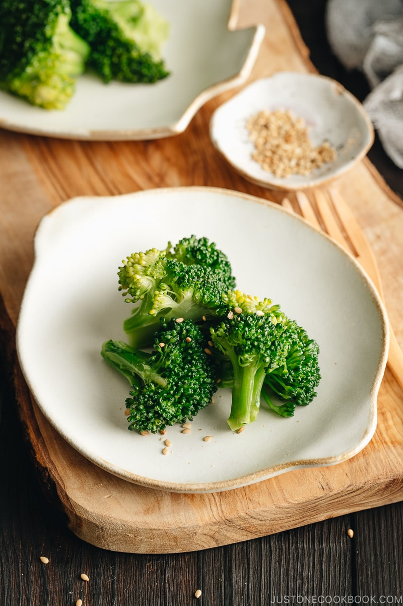

Broccoli Blanched with Sesame Oil

Looking for an easy but delicious way to add vegetables to your meal? Look no further! This is an extremely easy yet tasty side dish that can be made in bulk for your next few meals.
Ingredients
- 1 head brocolli
- 4 cups water
- 1 tsp salt
- 1 tbps roasted sesame oil
- toasted white sesame seeds (for garnish; optional)
Steps
- Separate the stems and florets of the broccoli. Cut off the tough skin on the stems.
- Bring 4 cups of water to a boil and add salt and stems. Cook for 2 minutes.
- Once the stems are getting tender (not tender yet), add the florets.
- Add the sesame oil and continue to cook until florets are almost tender, about 2.5 to 3 minutes. Since we will not transfer the broccoli to iced water to stop cooking further, we have to take it out before it’s completely done. The remaining heat will continue to cook broccoli.
- Drain water. If you like, drizzle additional sesame oil over the broccoli. Let cool completely and put them in the glass container for storing.